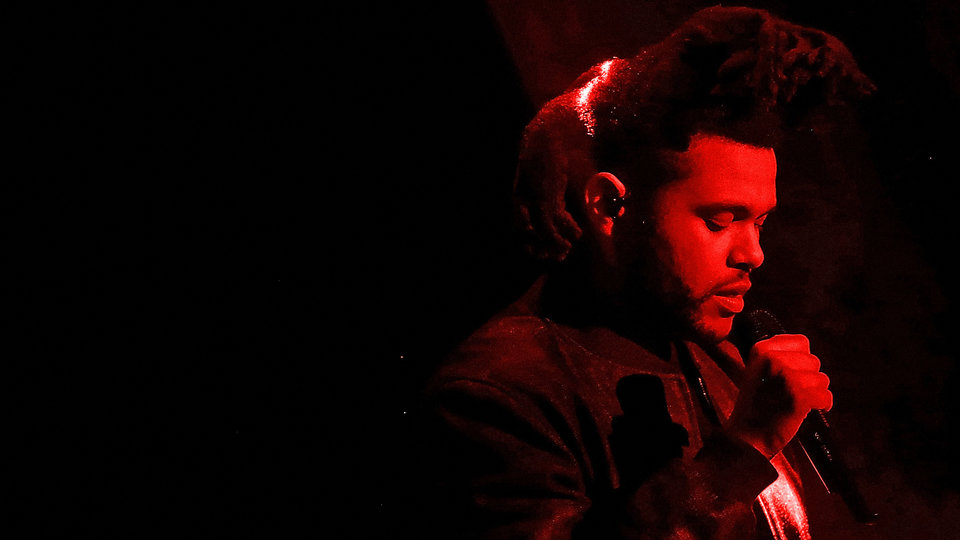
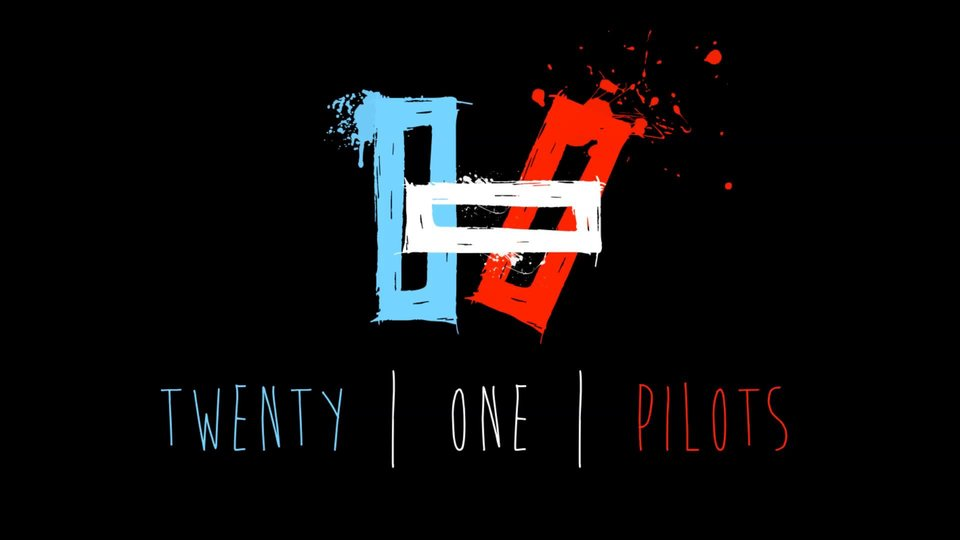

The Weeknd
Abel Makkonen Tesfaye (born 16 February 1990), known professionally as The Weeknd (pronounced "the weekend"), is a Canadian singer, songwriter and record producer.
In late 2010, Tesfaye anonymously uploaded several songs to YouTube under the name "The Weeknd". He released three nine-track mixtapes throughout 2011: House of Balloons, Thursday and Echoes of Silence, which were critically acclaimed. In 2012, he released a compilation album Trilogy, thirty tracks consisting of the remastered mixtapes and three additional songs. It was released under Republic Records and his own label XO.
In 2013, he released his debut studio album Kiss Land, which was supported by the singles "Kiss Land" and "Live For". His second album, Beauty Behind the Madness, which became his first number one album on the US Billboard 200, included the top-three single "Earned It" and produced the number-one singles "The Hills" and "Can't Feel My Face". The songs have simultaneously held the top three spots on the Billboard Hot R and B Songs chart, making him the first artist in history to achieve this. The Weeknd has won two Grammy Awards and nine Juno Awards.s In September 2016, the release of the third album Starboy was announced along with the release of the title track single "Starboy", which subsequently reached number one on the Billboard Hot 100.

Twenty One Pilots
Twenty One Pilots (stylized as TWENTY ØNE PILØTS and sometimes shortened to TØP) is an American musical duo originating from Columbus, Ohio. The band was formed in 2009 by lead vocalist Tyler Joseph along with former members Nick Thomas and Chris Salih, who eventually left in 2011, and currently consists of Joseph and drummer Josh Dun. The duo rose to fame in the mid–2010s after several years of touring and independent releases.
They put out two self-released albums, Twenty One Pilots in 2009 and Regional at Best in 2011, before being signed by Fueled by Ramen in 2012. Their label debut, Vessel, was released in 2013. The duo achieved breakthrough success with their fourth album, Blurryface (2015), which produced the successful singles "Stressed Out" and "Ride". In addition, the single "Heathens", recorded for the soundtrack of the film Suicide Squad, made the group the first alternative artist to have two concurrent top ten singles in the U.S. The duo have been nominated for five Grammy Awards, and have won one for Best Pop Duo/Group Performance.
